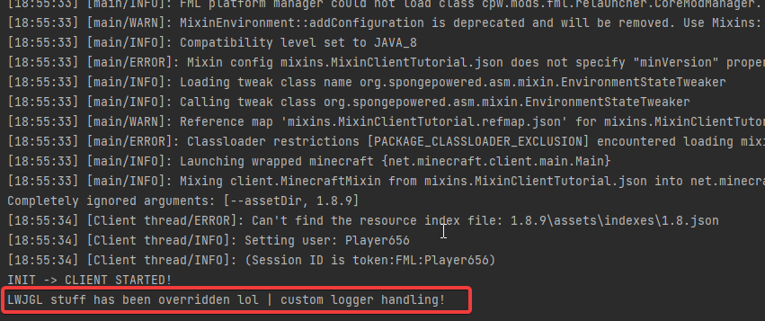

7 | Redirects
What is @Redirect?
Consider the following code
1 2 3 4 5 6 7 8 9 10 11 | |
This computes a function, which then outputs an Err, which can have 3 states
OKERRORWARNING
Then the error message is logged as a warning if there is an error, what we want is for that to be logged as an error instead
Given current knowledge up to this tutorial, all we could do is @Overwrite this method, but like discussed earlier this should only be used if it's your only option, or the easiest option, as it's destructive, potentially introduces large compatibilities with other modifications and introduces a lot more code and @Shadowing to your mixins
So what do we do instead?
Well, we can actually just redirect the Logger.warning method call to our own method
Luckily for us the @Redirect annotation that allows us to do this is incredibly simple :>
Note
The parameters for your redirection functions have to be precisely the same as the original methods, you must also add the class as a parameter, in this example, Logger
1 2 3 4 5 6 | |
This simply redirects the Logger.warning method to our own function which outputs an error based on the parameters
The method="anotherMethod()V" is pretty simple, just the method we are going to modify
The @At annotation specifies what method that you would like to redirect
Even better is if you use slices to get the precise method
1 2 3 4 5 6 7 8 9 10 11 12 13 | |
A practical example
Just like what we looked at last tutorial, in the startGame method in the Minecraft class, we looked at a logging statement for LWJGL and modified the arguments of that
This time we can redirect it and handle it in a custom way like shown
1 2 3 4 5 6 | |
Congrats, you know know how to implement redirects!

How can I get help, ask questions, etcetera?
The easiest way is to join my Discord server, which you can find here https://discord.gg/45RhZT5e9Z